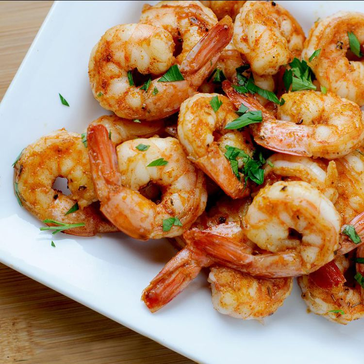

Spicy Grilled Shrimp

This grilled shrimp recipe is fast and easy to prepare and destined to be the hit of any barbeque. And, weather not permitting, the shrimp cook up great under the broiler, too.
Ingredients
Steps
- Make a paste with the garlic, oil, seasonings, and lemon juice.
- Toss the shrimp in the garlic paste until evenly coated.
- Grill the shrimp, then garnish with lemon wedges before serving.